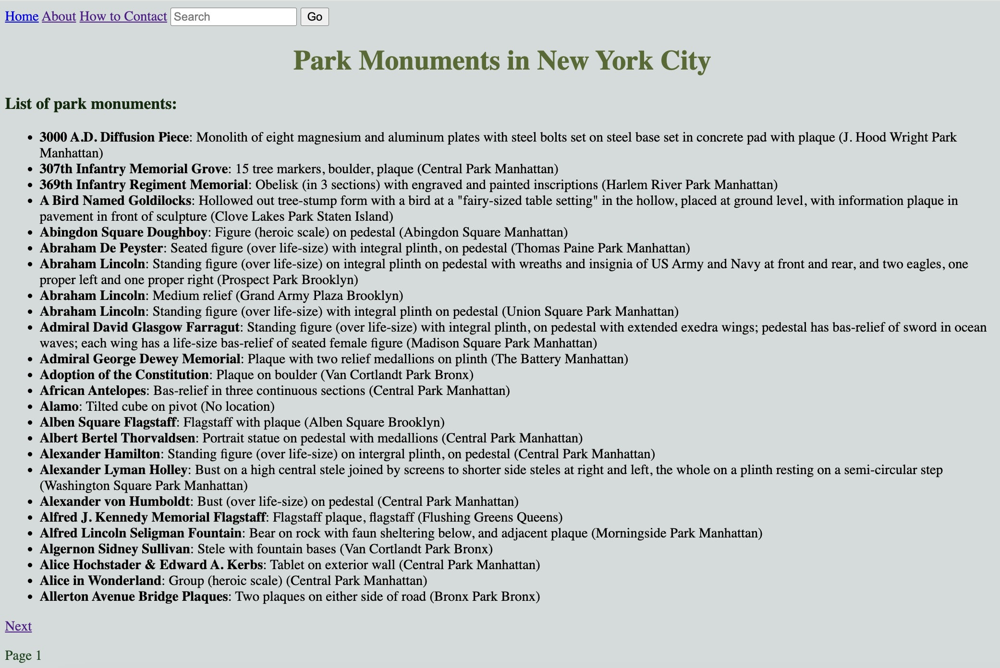
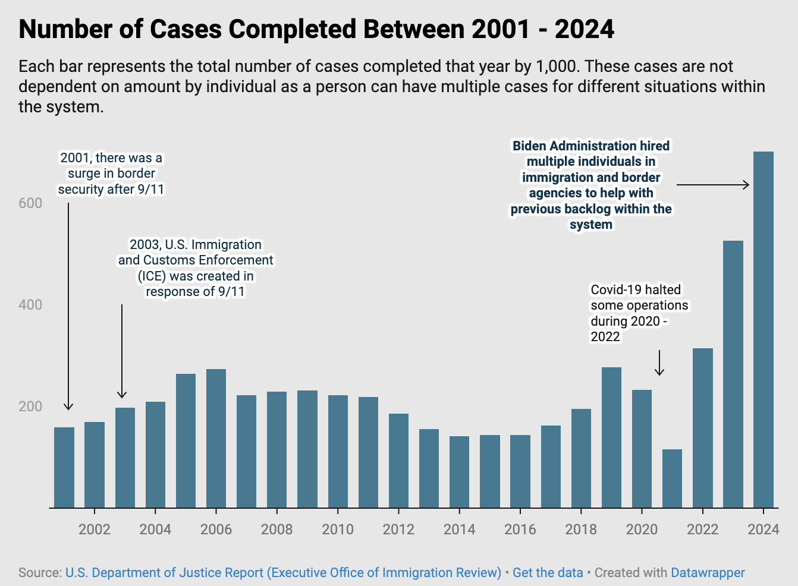
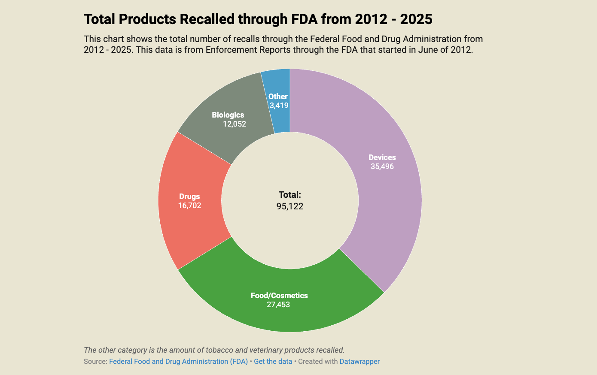

Data Journalism and Coding Work
NYC Park Monuments Website

Visit NYC Parks Monuments' Website Example
Abortion Rates and Politics Example
Visit the Abortion Rates and Politics Example
Executive Orders Affecting Immigration Process Example

Visit the Executive Orders and Immigration Process Example
Food Recalls in 2025 Example

Visit the Food Recalls in 2025 Example
Home